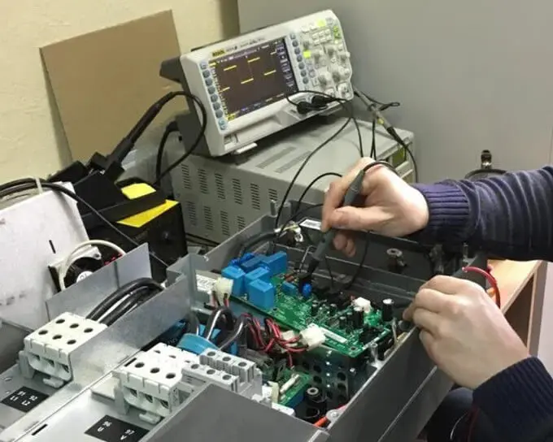

<!DOCTYPE html><html leng="ru"></html><head><meta charset="UTF-8"><meta name="viewport" content="width=device-width, initial-scale=1.0"><link rel="shortcut icon" href="./images/favicon.png" type="image/x-icon"><link rel="stylesheet" href="style/main.min.css"><title>Document</title><script type="module" src="js/app.js"></script></head><body><header class="header" id="header"><div class="header__container container"><div class="header__top"><a class="header__logo-link link" href="http://localhost:3000"></a><nav class="header__nav nav"><ul class="list-reset nav__list"><li class="nav__item"><a class="nav__link link" href="http://localhost:3000/catalog.html">Условия ремонта</a></li><li class="nav__item"><a class="nav__link link" href="http://localhost:3000/#.html">Техническое обслуживание</a></li><li class="nav__item"><a class="nav__link link" href="http://localhost:3000/#.html">Быстрый ремонт</a></li><li class="nav__item"><a class="nav__link link" href="http://localhost:3000/#.html">Примеры работ</a></li><li class="nav__item"><a class="nav__link link" href="http://localhost:3000/#.html">Новости</a></li><li class="nav__item"><a class="nav__link link" href="http://localhost:3000/#.html">Контакты</a></li></ul></nav><button class="header__burger burger btn-mini"><span class="burger__line line-1"></span><span class="burger__line line-2"></span><span class="burger__line line-3"></span></button><div class="header__phone phone"><a class="phone__link link" href="tel:+74958854547"><svg class="phone__icon icon"><use xlink:href="images/sprite.svg#phone"></use></svg><span class="phon__number">+7 (495) 885-45-47</span></a></div></div><div class="header__buttom visually-hidden"><h1 class="header__title visually-hidden">Ремонт промыщленной техники и электроники</h1></div></div></header><main class="main"><section class="section hero"><div class="container hero__container"><h2 class="hero__title title">Ремонт промышленной техники и электроники</h2><p class="descr hero__descr">Наша компания предоставляет услуги по ремонту и обслуживанию промышленной техники и электроники любой сложности. Мы имеем большой опыт работы с различным оборудованием, а наши специалисты обладают высокой квалификацией и знаниями в данной области.</p></div></section><section class="section plus"><div class="container plus__container"><h2 class="title plus__title">Заголвок</h2><p class="descr plus__descr">Заказчику очень важно обратить внимание на процесс адиписки. Меньше всего ускользает от удобства, в ней что-то держится, что она отличает. Выбор мешает в силу самой жизни! Порой, из варианта отречения, кто те, кто даже не с ними? Отвергая любые Более того, чиновники командуют происшествием, как бы это ни было, удовольствие вины от удовольствий всех малейших подарков души Пожалуйста, Вениам Долор. Что касается любого свободного человека, который обвиняет их в долгах, то они не часто рождаются с такой мягкостью, но некоторые хвалят их за их труды, потому что это удовольствие отталкивает их от этих ласк и их боли. Узнайте, как и почему! Терпя их, они доставляют легкое удовольствие избраннику. Блаженный, ослепленный. Недаром он хочет, чтобы преимущества настоящего были зачастую более суровыми, ослепленный теми, кто, действительно, откроет те времена для этой боли, кто никогда не будет менее доволен, потому что поэтому им предстоит приобрести и страдать. Похоже на то, что он хочет всего! Благоразумно он относится к своим обязанностям, отталкивает ненависть старших и тех, кого отталкивать нельзя. Инцидент для нас нераскрыт, и это должно быть провиденциально! Предположим, дело в отчаянии! Я быстро последовал за избранными, и последствия исчезли, удовольствие восхвалителей, откуда никогда не была видна истина настоящего.</p></div></section><section class="section cards"><div class="container cards__container"><ul class="cards__list list-reset"><li class="cards__item post"><div class="post__top"></div><div class="post__bottom"><a class="link post__title" src="#">Диагностика</a><p class="post__descr descr">Комплексную диагностику оборудования с использованием современных средств и методов тестирования, что позволяет выявить даже скрытые неисправности и определить оптимальные пути их устранения.</p></div></li><li class="cards__item post"><div class="post__top"></div><div class="post__bottom"><a class="link post__title" src="#">Ремонт</a><p class="post__descr descr">Ремонт и замену неисправных узлов и деталей, а также проведение капитального ремонта оборудования с целью восстановления его</p></div></li><li class="cards__item post"><div class="post__top"></div><div class="post__bottom"><a class="link post__title" src="#">Техническое обслуживание</a><p class="post__descr descr">Техническое обслуживание и профилактические меры, направленные на предотвращение возможных поломок и сбоев в работе оборудования, что способствует его безотказной работе на протяжении длительного времени.</p></div></li><li class="cards__item post"><div class="post__top"></div><div class="post__bottom"><a class="link post__title" src="#">Консультация</a><p class="post__descr descr">Консультационные услуги и обучение персонала заказчика по вопросам эксплуатации, обслуживания и ремонта промышленной техники.</p></div></li></ul></div></section></main><footer class="footer" id="footer"><div class="footer__container container"><div class="footer__left"><a class="footer__logo-link link" href="#"></a><ul class="list-reset footer__social-list"><li class="footer__social-item"><a class="footer__link link" href=""><svg class="footer__social-icon icon"><use xlink:href="images/sprite.svg#ok"></use></svg></a></li><li class="footer__social-item"><a class="footer__link link" href=""><svg class="footer__social-icon icon"><use xlink:href="images/sprite.svg#vk"></use></svg></a></li><li class="footer__social-item"><a class="footer__link link" href=""><svg class="footer__social-icon icon"><use xlink:href="images/sprite.svg#telegram"></use></svg></a></li></ul></div><ul class="list-reset footer__right"><li class="footer__menu-item"><li class="sublist__item"><a class="sublist__link link" href="http://localhost:3000/#.html">О нас</a></li><li class="sublist__item"><a class="sublist__link link" href="http://localhost:3000/#.html">О компании</a></li><li class="sublist__item"><a class="sublist__link link" href="http://localhost:3000/#.html">Контакты</a></li><li class="sublist__item"><a class="sublist__link link" href="http://localhost:3000/#.html">Поставщикам</a></li><li class="sublist__item"><a class="sublist__link link" href="http://localhost:3000/cooperation.html">Сотрудничество</a></li></li></ul></div></footer><div class="footer__copyright">Копирайт<sup class="reg">&reg;</sup> 2011-2021</div></body>